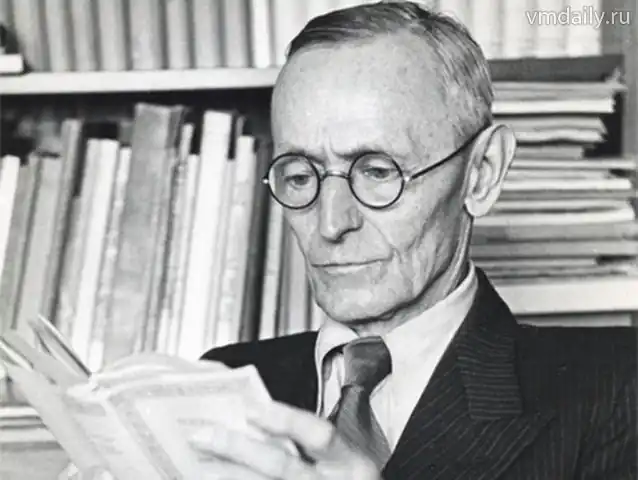
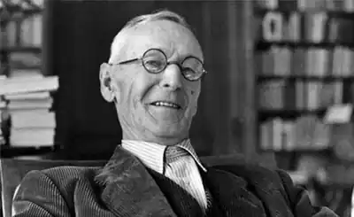

ГЕССЕ, Герман (Hesse, Herman — 2.07.1877, M. Кальв — 9.08.1962, м. Монтаньйола, Швейцарія) — німецький письменник, лауреат Нобелівської премії 1946 р.Один із найвидатніших німецьких письменників, найоригінальніший і найхимерніший митець XX сторіччя, Гессе жив у трагічному світі нашої доби, багато пережив і побачив. Він знав свій час і своїх сучасників, але майже не писав про їхнє щоденне життя і турботи. У своїх найвідоміших книгах письменник підіймав створену ним дійсність до високих сфер духу, абстракції та узагальнення. Не було випадковим те, що в 1946, повоєнному році, саме цей німець був нагороджений Нобелівською премією. То було цілком заслужене визнання одного із найвидатніших авторів філософських романів і одного із найбільших мислителів-гуманістів XX сторіччя. Гессе був тісно пов'язаний з двома країнами — Німеччиною, де у вюртембурзькому Кальві він народився, і з сусідньою Швейцарією, де він жив тривалий час замолоду і де з 1919 року й до кінця своїх днів у Монтаньйолі поблизу Лугано провів найплідніші роки творчого життя. З 1923 р. Гессе став громадянином Швейцарії, шанованим і відомим у світі письменником. Обидві країни вважають його "своїм". На становлення характеру Гессе визначальний вплив мала місцевість, де він народився, і його родина. Малесеньке містечко Кальв на півночі Швабії було цитаделлю лютеранства. В переважній більшості мешканці цього міста були не тільки лютеранами, а й пієтистами, тобто належали до цього відгалуження протестантизму. Пієтизм ґрунтується на принципі активної любові до Христа і вважається особливо сентиментальним, чуттєвим християнством. Відмова від суто зовнішніх форм існування людини та концентрація на внутрішньому, духовному житті індивіда, чиїм завданням є виховання власної душі та наближення до вічного ідеалу — до Христа, такою є доктрина пієтизму. Один із дідів Гессе був місіонером і багато років проповідував на Далекому Сході. Його дочка, мати Германа, продовжувала місію свого батька, її чоловік провів чотири роки на далеких островах Тихого океану як священик, але був змушений через стан здоров'я повернутися на батьківщину. Подружжя було єдине у своїй любові до Бога, у своєму служінні йому, у суворих і скромних формах свого щоденного побуту. То були високоосвічені, чисті люди, заглиблені у свій духовний світ, цілком віддані релігійній діяльності; події у світі їх майже зовсім не цікавили. їхній синочок виявив свою неспокійну, бунтівну вдачу ще зовсім маленьким, у два-три роки. Він був нервовою дитиною, часто конфліктував з оточенням і його важко було приборкувати. Дійшло до того, що батьки вирішили віддати малого до спеціального виховного закладу. Пізніше, коли Герман у юнацькі роки втік з теологічної школи, прірва між ним та його батьками стала ще глибшою. Одначе внутрішньо він був зв'язаний зі своєю пієтистською родиною. І зацікавлення його діда Сходом, езотеричними далекосхідними вченнями, справило на юнака незабутнє враження і згодом привело його до Індії. А китайська релігія і філософія — даосизм стали наріжним каменем його світогляду.
Особливості природи навколо рідного міста і своєрідність швабського менталітету також позначилися на вдачі юного Гессе. Тісний зв'язок із природою, яка пробуджувала в ньому ліричні настрої й антипатію до великих міст, до сучасної цивілізації, він поділяв зі своїми провінційними швабськими компатріотами. Після Першої світової війни, згідно зі своїми уподобаннями, — любові до тиші, спокою, патріархальної замкнутості у власному світі — Гессе оселився в невеличкому швейцарському містечку Монтаньйола. Там він і жив, відокремлений від великого світу, обробляючи свій садок, займаючись творчою літературною працею. Саме в ці роки, перебуваючи на відстані від своєї неспокійної вітчизни з усіма її повстаннями, революціями, страйками і кривавими переворотами, Г. написав великі романи: "Степовий вовк" ("Steppenwolf', 1927), "Нарцис і Ґольдмунд" ("Narziu und Goldmund", 1930) і "Гра в бісер" ("Das Glasperlenspiel", 1943). Ці твори принесли йому світову славу. Та Гессе мусив багато пережити, доки досяг своєї мистецької зрілості.
Його перші твори з'явились у кінці XIX ст. Тоді, з 1895 року, він працював учнем продавця книг у Тюбінгені, пізніше торгував книжками та антикваріатом у Базелі (1899). Його ранні поезії, оповідання були позитивно поціновані відомими літераторами й подобалися читачам. Отже, він відмовився від книжкової торгівлі й оселився як вільний художник у Ґайєнгофені біля Боденського озера. Серед його ранніх творів два заслуговують на особливу увагу: "Петер Каменцінд"("Peter Camenzind", 1904) — роман виховання і велике оповідання з трагічним кінцем "Під колесом" ("Untem Rag", 1906), обидва з сильним автобіографічним елементом, обидва меланхолійні та сумні. У "Петері Каменцінді" молодий письменник розповідає про шлях розвитку обдарованого романтичного юнака простого походження, який хоче стати поетом. Він відчуває своє покликання, але ніхто йому не допомагає, у жодної людини з бюргерського оточення він не знаходить розуміння і підтримки. Уже в цьому первістку Гессе зустрічається типовий для романтиків конфлікт між духовно багатим і мистецьки обдарованим юнаком і світом, у якому він живе. Настрій цього твору, його атмосфера, художні засоби, використані в ньому, будуть пізніше повторені та поглиблені в інших оповіданнях і романах. Лише природа, тварини і людські істоти, вигнані з суспільства, як, приміром, каліка Боппі, можуть втішити волелюбного юнака-шукача, підтримати його. Щиросерді плани Петера розбиваються у великому місті, стикаючись з його нелюдським холодом, тверезо-жорстоким прагматизмом. Петер не хоче пристосовуватися до законів нелюбого йому міста і, розчарований, повертається у своє село. В оповіданні "Під колесом" подібний конфлікт між людиною та її консервативним, негуманним оточенням завершується трагічно. Система виховання та навчання в церковній семінарії в Маульбронні вбивають у Гансові Гібенраті все добре, людяне, природне, життєрадісне. Під колесом технічної цивілізації і відповідними їй уявленнями про сенс людського існування, його вартісність і мету, завдання кожного індивіда, які звучать жорстоко та вульгарно, ламається ніжна і вразлива душа Ганса, і він, як випливає з оповідання, накладає на себе руки. Майже все, що сталося з юнаком, має своїм джерелом власний життєвий досвід письменника. Відомо ж бо, як суворо та бездушно намагалися батьки Гессе сформувати вдачу сина згідно зі своїми уявленнями. Дійшло до того, що вони помістили хлопця в заклад для душевнохворих, керівник якого був відомий тим, що виганяв із хворих диявола. Там Герман намагався накласти на себе руки, його проголосили божевільним і відправили у божевільню м. Штеттен. Серед епілептиків і недоумкуватих він почувався зовсім хворим, жалюгідним, засудженим і зневаженим світом і людьми. Гессе страждав і знаходив у своїх муках, самотності, упослідженості своєрідне мазохістське задоволення. Як зауважив один із дослідників життя та творчості Гессе, листи юнака до батька у цей період гіркоти та відчаю можна порівняти либонь зі знаменитим листом Ф. Кафки до батька: "Я втратив усе: вітчизну, батьків, любов, віру, надію і себе самого... Штеттен для мене — то пекло". Так у безмежному відчаї писав Г. до своїх рідних. Маульброннська семінарія, в якій навчається головний герой оповідання "Під колесом", схожа на релігійну школу, в якій хлопцем перебував автор, звідки він втік, з чого почався його хресний шлях у наступні роки. Принцип такого освітнього закладу формулює в іншому оповіданні ректор латинської школи: "Приборкати в хлопців природні грубі сили і бажання, викорчувати їх, а натомість насадити тихі, помірковані, визнані державою ідеї". Усі вчителі переконані, що "школа має зламати природну людину, перемогти й обмежити її", виховати з дитини стандартного бюргера, притлумити її "Я", зробити її вірнопідданим шовіністом або пасивною, заляканою людиною, якщо не розчавити взагалі. Для Гессе тема виховання стала однією із найважливіших, над якою він працював усе життя. Найвідоміші твори письменника містять цю проблематику, особливо "Степовий вовк", якого можна визначити як вершину мистецьких шукань Гессе в царині формування, становлення людини. Цей роман, як і багато інших творів автора, оповідає про письменника, який хоче бути відвертим і вступає в конфлікт зі своїм оточенням. Але конфлікт тут значно складніший і глибший, ніж у ранніх творах. У романі йдеться не лише про зовнішнє зіткнення тонкої, чутливої людини, аутсайдера з брутальним, хамським, егоїстичним світом повоєнної Німеччини, з фальшем Ваймарської республіки. Значно більше Гессе цікавить внутрішній конфлікт кожного, у чиїй душі відбувається двобій духовного і чуттєвого. Улюблені письменники Гессе — Г. Шторм, В. Раабе, Т. Фонтане писали про це, шукали причини внутрішніх борінь між добром і злом у людській істоті. Ще гостріше та чіткіше ставили питання про майже шизофренічну роздвоєність особистості такі мислителі, як А. Шопенгауер і Ф. Ніцше. Праці цих філософів були дуже добре відомі Гессе. І поглиблене вивчення містичних вчень Сходу, китайського даосизму Лао Дзе та буддизму, поїздка до Індії в 1911 p., — все загострило і зробило мудрішим погляд Гессе на людину та себе самого. Перед війною існування Гессе як людини і митця здавалося забезпеченим і стабільним. У 1903 р. він одружився з розумною й освіченою жінкою, трохи старшою за нього. Вони винайняли затишний будинок у мальовничій місцевості. У тиші та спокої письменник міг працювати продуктивно. Дружина народила йому трьох синів. Відокремившись від метушливого світу, родина вела ідилічне існування. Але ідилія була тільки уявною. Внутрішній неспокій роздирав сім'ю, гнав Гессе у далекі подорожі. Подорож до Індії була, по суті, втечею, знаком розпаду шлюбу. З властивою йому особливою інтуїцією письменник відчував небезпеку чогось страшного, жахливого, що згустилося в атмосфері Європи. І все ж таки вибух Першої світової війни став для нього глибоким потрясінням. З самого початку війни Гессе послідовно негативно ставився до цього кривавого безумства.